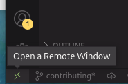
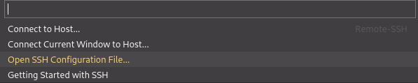

This the multi-page printable view of this section. Click here to print.
Developer Documentation
1 - Building and Running MicroShift
System Requirements
For building MicroShift you need a system with a minimum of
- a supported 64-bit CPU architecture (amd64/x86_64, arm64, or riscv64)
- a supported Linux OS (RHEL 8, CentOS Stream, or Fedora 34+)
- 2 CPU cores
- 3GB of RAM
- 1GB of free storage space for MicroShift
Building MicroShift
Install the build-time dependencies:
sudo dnf install -y git make golang
sudo dnf install -y git make golang
Clone the repository and cd into it:
The available community documentation is not currently compatible with the latest MicroShift source code. To build the latest MicroShift binary, follow the instructions in the openshift/microshift GitHub repository.
Otherwise, use the developer preview RPMs by following the instructions in the MicroShift developer preview documentation, using one of the no-cost Red Hat Developer subscriptions.
git clone -b 4.8.0-microshift-2022-04-20-141053 https://github.com/openshift/microshift.git
cd microshift
Build MicroShift:
# release build (without debug symbols)
make
# development build (with debug symbols)
make DEBUG=true
Running MicroShift
MicroShift requires CRI-O to be installed and running on the host.
Refer to Getting Started: Install CRI-O
Install the SELinux policies from RPM or build and install them from source:
# from RPM
sudo dnf copr enable -y @redhat-et/microshift
sudo dnf install -y microshift-selinux
# from source
(cd packaging/selinux && sudo make install)
Run MicroShift using
sudo ./microshift run
Now switch to a new terminal to access and use this development MicroShift cluster.
-
To install OpenShift and Kubernetes clients, follow Getting Started: Install Clients.
-
To configure the kubeconfig, follow Getting Started: Copy Kubeconfig.
It is now possible to run oc or kubectl commands against the MicroShift environment.
Verify that MicroShift is running:
oc get pods -A
Refer to the MicroShift user documentation
Cleaning Up
To stop all MicroShift processes and wipe its state run:
sudo hack/cleanup.sh
2 -
Building the RPMs
MicroShift binary with systemd unit file and the required SELinux submodule can be built as an RPM using make on an RPM-based distribution.
Install the MicroShift build dependencies and the RPM specific build-time packages.
sudo dnf install -y git golang rpm-build selinux-policy-devel container-selinux
Clone the repository and cd into it:
The available community documentation is not currently compatible with the latest MicroShift source code. To build the latest MicroShift RPMs, follow the instructions in the openshift/microshift GitHub repository.
Otherwise, use the developer preview RPMs by following the instructions in the MicroShift developer preview documentation, using one of the no-cost Red Hat Developer subscriptions.
git clone -b 4.8.0-microshift-2022-04-20-141053 https://github.com/openshift/microshift.git
cd microshift
Build the SELinux and MicroShift RPMs with:
make rpm
RPMs will be placed in ./packaging/rpm/_rpmbuild/RPMS/. There are two RPMs that will be required to install:
packaging/rpm/_rpmbuild/RPMS/noarch/microshift-selinux-*
packaging/rpm/_rpmbuild/RPMS/x86_64/microshift-*
Installing the RPMs
Enable the CRI-O repository:
command -v subscription-manager &> /dev/null \
&& subscription-manager repos --enable rhocp-4.8-for-rhel-8-x86_64-rpms
sudo dnf module enable -y cri-o:1.21
sudo dnf module enable -y cri-o:1.21
Install the MicroShift and the SELinux policies:
sudo dnf localinstall -y packaging/rpm/_rpmbuild/RPMS/noarch/microshift-selinux-*
sudo dnf localinstall -y packaging/rpm/_rpmbuild/RPMS/x86_64/microshift-*
Running the RPMs
Start CRI-O and MicroShift services:
sudo systemctl enable crio --now
sudo systemctl enable microshift --now
To install OpenShift and Kubernetes clients, follow Getting Started: Install Clients.
To configure the kubeconfig, follow Getting Started: Copy Kubeconfig.
It is now possible to run oc or kubectl commands against the MicroShift environment.
Verify that MicroShift is running:
oc get pods -A
You can stop MicroShift service with systemd:
sudo systemctl stop microshift
- cluster data at
/var/lib/microshiftand/var/lib/kubelet, will not be deleted upon stopping services. Upon a restart, the cluster state will persist as long as the storage is intact.
Check MicroShift with
sudo podman ps
sudo critcl ps
For more on running MicroShift, refer to the user documentation
3 - Optional vagrant setup
It is possible to use Vagrant for VM provisioning, however it is not necessary.
Find a guide on how to install it for your system here.
Once Vagrant is installed, create a Vagrant box for the operating system of choice. For this example we will be looking at a fedora 34 cloud image, however you can substitute any vagrant image of your choice.
First, navigate to the MicroShift directory on your host system, or another designated
directory where we will be storing the Vagrantfile.
Next, download the vagrant image. For this example we will use a fedora 34 cloud image:
vagrant box add fedora/34-cloud-base
Depending on the image, Vagrant will ask you to select a Virtualization provider, just select the first one.
Once that downloads, initialize the repository for launching your image:
vagrant init fedora/34-cloud-base
Running this command will create a Vagrantfile in your working directory which
is used to configure your vagrant box.
Before starting the Vagrant box, increase the amount of RAM available to the system.
To do this, edit the Vagrantfile and configure your provider settings to include
the following:
config.vm.provider "libvirt" do |v|
# provides 3GB of memory
v.memory = 3072
# for parallelization
v.cpus = 2
end
The value of config.vm.provider depends on the provider you selected when you
ran vagrant add earlier. For example, if you selected virtualbox then the first
line should be: config.vm.provider "virtualbox" do |v|
Now start the VM:
vagrant up
Once the VM is up, connect to it:
vagrant ssh
Once ssh'd into the vagrant instance, refer to the local build and install to begin local development.
(Extra Optional) Connecting VSCode to Vagrant
If using VSCode, you can connect to your vagrant box with a few extra steps.
Increasing Memory Requirements
Since VSCode leans more on the heavy side of development, the RAM usage on your Vagrant environment
can go up to 5GB, and therefore we will need to modify the Vagrantfile to
increase the amount of available RAM from 3GB to 5GB (or 6GB if you want to be safe).
To do this, set v.memory to the following in your Vagrantfile:
# provides 5GB of memory
v.memory = 5120
# provides 6GB of memory
v.memory = 6144
Setting up an SSH Profile
First we need to ask Vagrant for an SSH config file. From your host machine, run:
vagrant ssh-config > ssh-config.conf
You can edit the ssh-config.conf file to change the hostname from default to
vagrant to be more easily identifiable, but that's up to you. :)
Here's an example of a working SSH config file:
Host default
HostName 127.0.0.1
User vagrant
Port 2222
UserKnownHostsFile /dev/null
StrictHostKeyChecking no
PasswordAuthentication no
IdentityFile /path/to/microshift/.vagrant/machines/default/virtualbox/private_key
IdentitiesOnly yes
LogLevel FATAL
Next, you'll want to install the Remote - SSH extension from the VSCode Marketplace
With the extension installed, you'll click on the green bottom in the bottom-left corner of VSCode to open a dropdown menu for SSH options:

Select the option to open an SSH configuration file: 
Next you'll want to navigate to the "Remote Explorer" tab on the left-hand side of VSCode, then select on the vagrant target (default if you haven't renamed it) and click on the button to connect to it in a remote window.
(Credits to Andrés Lopez for this guide: Connect Visual Studio Code with Vagrant in your local machine )
Now that the vagrant environment is setup, refer to the local build and install